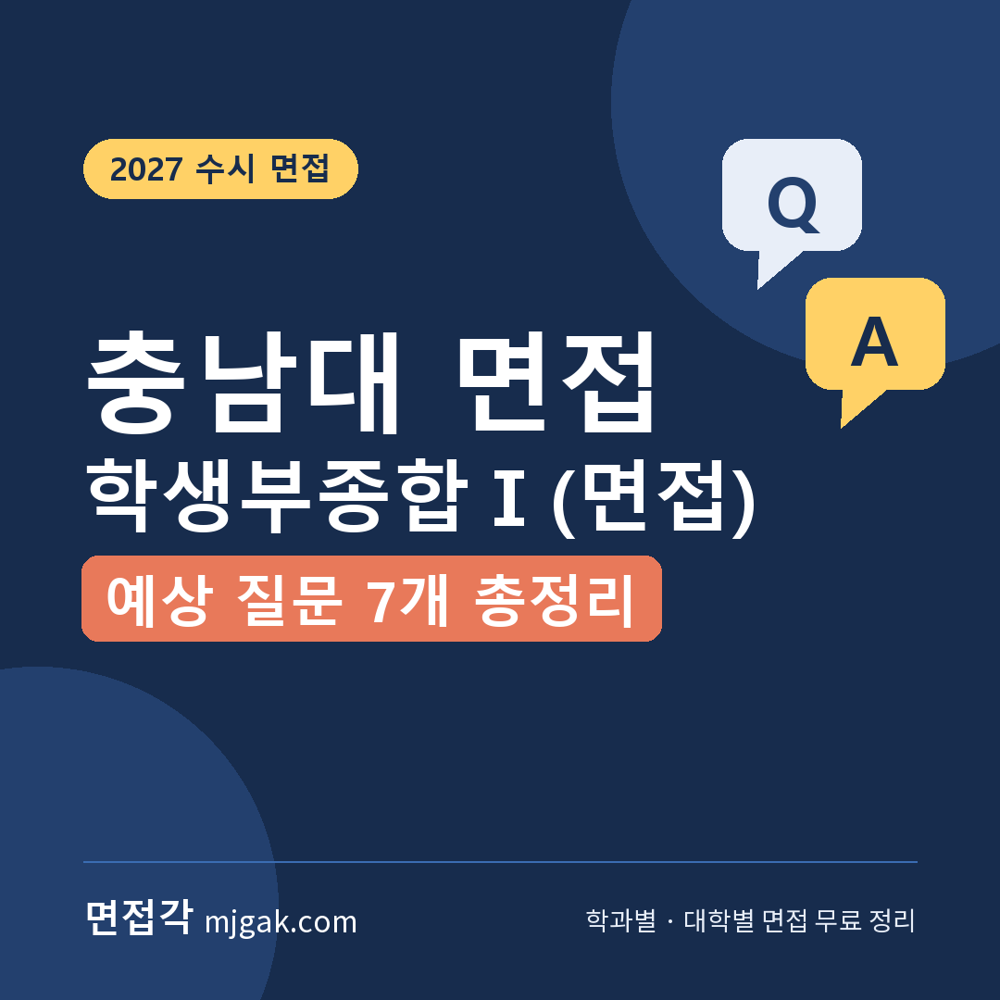
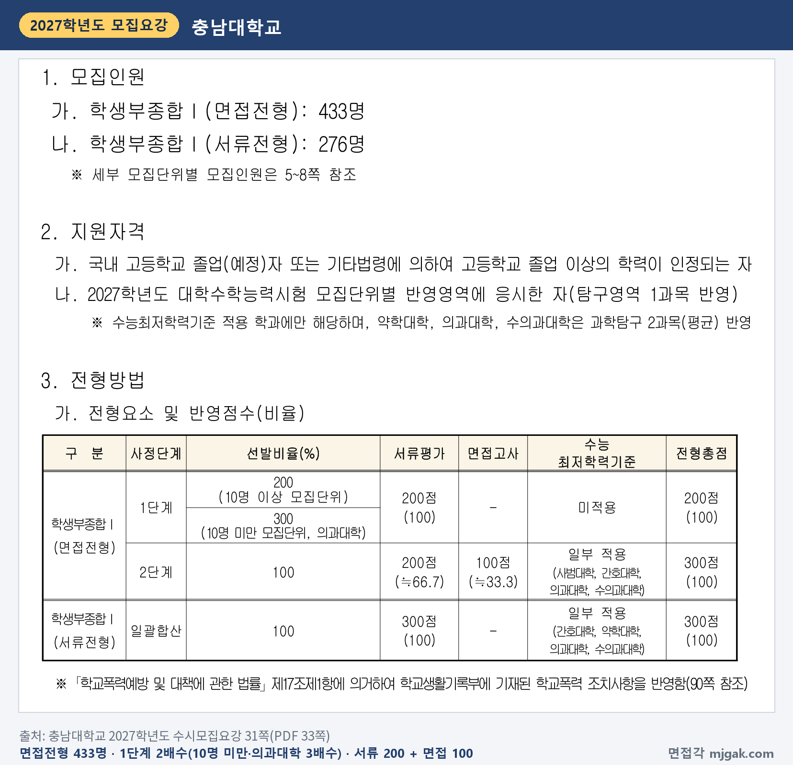
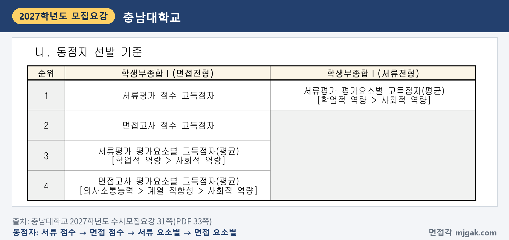
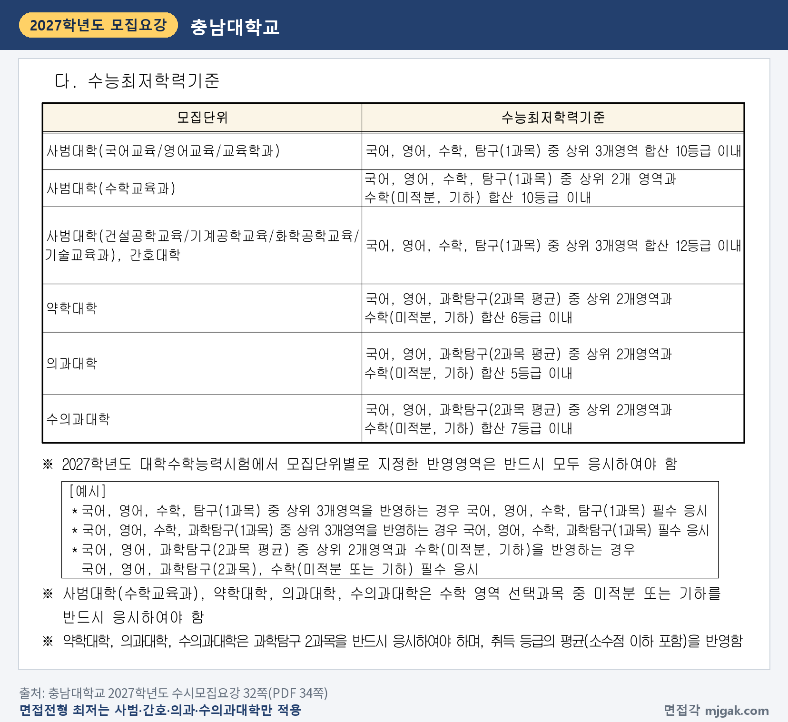
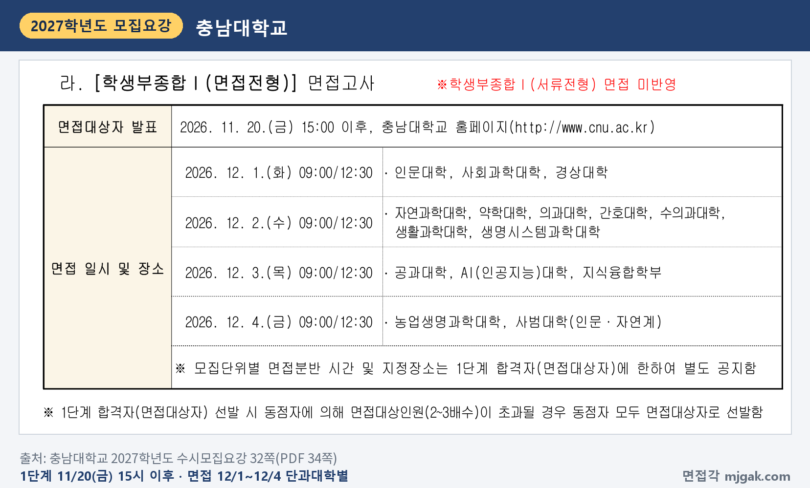
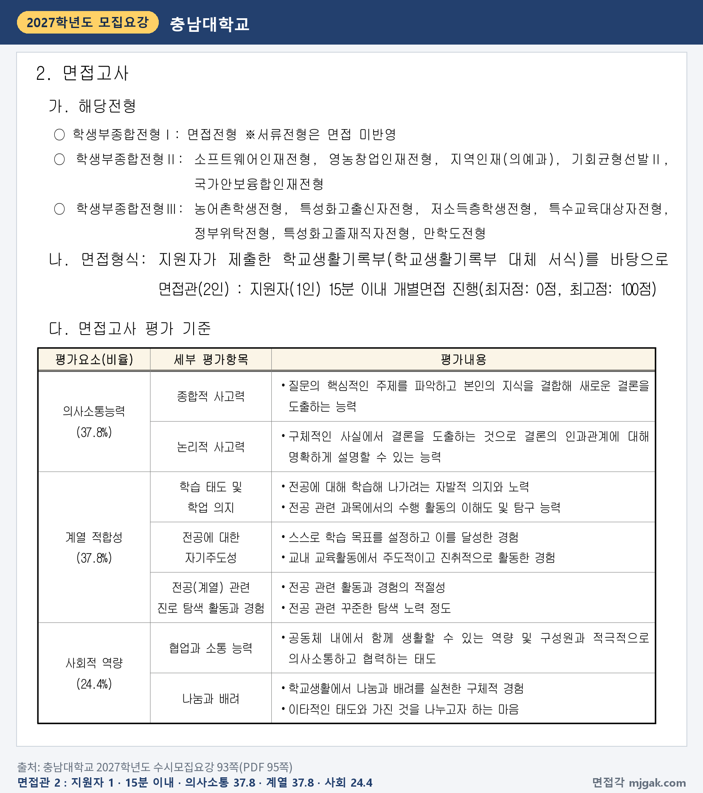
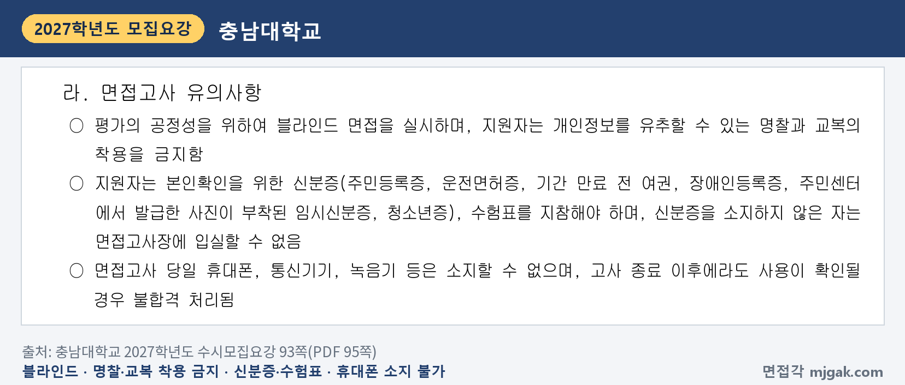
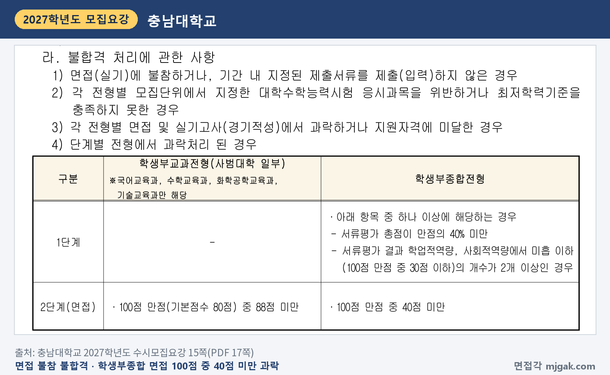
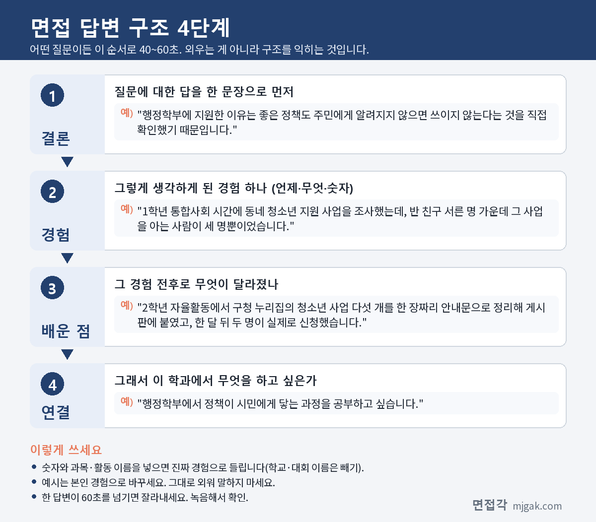

Ctrl+V (서식 유지됨)제목
본문 (이 영역 전체가 복사됩니다)
📷 여기에 이미지 넣기 — 썸네일 — thumb-cnu.png (대표 이미지로 지정)
충남대 학생부종합Ⅰ(면접전형)에서 먼저 챙길 것은 내 면접 날짜입니다. 면접은 12월 1일(화)부터 4일(금)까지 단과대학별로 나뉘어 있어서, 같은 전형이라도 지원한 모집단위에 따라 날짜가 다릅니다. 수능은 11월 19일(목)이고, 면접대상자 발표는 바로 다음 날인 11월 20일(금) 15:00 이후입니다. 2단계는 서류평가 200점과 면접 100점을 합해 300점으로 뽑고, 면접은 면접관 2인이 지원자 1인을 15분 이내로 보는 개별면접입니다. 충남대학교 2027학년도 수시모집요강으로 전형 방법, 면접 날짜와 방식, 예상 질문 7개, 준비 순서를 정리했습니다. 이 전형 지원자가 읽으시면 됩니다.
1. 학생부종합Ⅰ(면접전형), 2027학년도에는 어떻게 보나
학생부종합Ⅰ(면접전형)은 433명을 뽑습니다(31쪽). 2026학년도 '학생부종합전형Ⅰ(일반)'이 2027학년도에 '학생부종합전형Ⅰ(면접)'으로 이름이 바뀌었습니다(3쪽). 같은 학생부종합Ⅰ 안의 서류전형(276명)은 면접을 반영하지 않습니다(31·32쪽).
모집단위별 인원은 모집요강 5~7쪽 표에 있습니다. 소계는 인문계 135명, 자연계 288명, 예체능계 10명(스포츠과학과)입니다. 인원이 많은 곳은 경영학부 23명, 컴퓨터인공지능학부 20명, 의예과 14명, 간호학과·정보통신융합학부 각 13명, 기계공학부·신소재공학과 각 12명, 심리학과 11명입니다. 약학과는 표의 면접전형 칸이 비어 있어 이 전형 모집인원이 없고, 서류전형 칸에 2명이 있습니다(7쪽).
전형 방법은 1단계에서 서류평가 100%(200점)로 모집인원의 200%를 뽑고, 10명 미만 모집단위와 의과대학은 300%를 뽑습니다. 2단계는 서류평가 200점(약 66.7%)과 면접 100점(약 33.3%)을 합산합니다(31쪽). 2배수인 곳은 의예과를 뺀 위 학과와 행정학부·스마트시티건축공학과·스포츠과학과(각 10명)이고, 그 밖의 모집단위는 10명 미만이라 3배수입니다(5~7쪽을 이 글에서 센 결과). 동점자 때문에 2~3배수를 넘으면 동점자를 모두 면접대상자로 뽑습니다(32쪽).
📷 여기에 이미지 넣기 — 캡처 1 — 충남대학교 2027학년도 수시모집요강 31쪽(PDF 33쪽): cnu-2027-hakjong1-method.png
2단계 동점자는 서류평가 점수, 면접 점수, 서류 평가요소별 점수, 면접 평가요소별 점수(의사소통능력 > 계열 적합성 > 사회적 역량) 순으로 가립니다(31쪽).
📷 여기에 이미지 넣기 — 캡처 2 — 충남대학교 2027학년도 수시모집요강 31쪽(PDF 33쪽): cnu-2027-hakjong1-tie.png
수능최저학력기준은 사범대학, 간호대학, 의과대학, 수의과대학에만 적용합니다(31쪽). 의과대학은 국어, 영어, 과학탐구(2과목 평균) 중 상위 2개 영역과 수학(미적분, 기하) 합산 5등급 이내, 수의과대학은 같은 방식으로 7등급 이내입니다. 간호대학은 국어, 영어, 수학, 탐구(1과목) 중 상위 3개 영역 합산 12등급 이내입니다. 사범대학은 국어교육·영어교육·교육학과·수학교육과 10등급, 건설공학교육·기계공학교육·화학공학교육·기술교육과 12등급 이내입니다(32쪽). 표의 약학대학 기준은 서류전형에 해당합니다(31쪽).
📷 여기에 이미지 넣기 — 캡처 3 — 충남대학교 2027학년도 수시모집요강 32쪽(PDF 34쪽): cnu-2027-hakjong1-min.png
2. 언제 보나: 11월 20일(금) 발표, 12월 1일~4일 단과대학별 면접
면접대상자 발표는 11월 20일(금) 15:00 이후 충남대학교 홈페이지(www.cnu.ac.kr)에서 합니다(32쪽). 면접은 단과대학별로 이렇게 나뉩니다(32쪽).
- 12월 1일(화): 인문대학, 사회과학대학, 경상대학
- 12월 2일(수): 자연과학대학, 약학대학, 의과대학, 간호대학, 수의과대학, 생활과학대학, 생명시스템과학대학
- 12월 3일(목): 공과대학, AI(인공지능)대학, 지식융합학부
- 12월 4일(금): 농업생명과학대학, 사범대학(인문·자연계)
날짜마다 시각은 09:00/12:30으로 적혀 있고, 모집단위별 면접분반 시간과 지정장소는 1단계 합격자에게만 따로 공지합니다(32쪽).
📷 여기에 이미지 넣기 — 캡처 4 — 충남대학교 2027학년도 수시모집요강 32쪽(PDF 34쪽): cnu-2027-hakjong1-schedule.png
농업경제학과는 모집인원표의 인문계에 있지만 농업생명과학대학 소속이라 12월 4일(금)입니다(5쪽). 스포츠과학과는 자연과학대학 소속이라 12월 2일(수)입니다(7쪽). 컴퓨터인공지능학부는 2027학년도부터 공과대학에서 AI(인공지능)대학 소속으로 바뀌었고(3쪽), 면접은 12월 3일(목)입니다. 사범대학은 인문계(국어교육과 등)와 자연계(수학교육과 등) 모두 12월 4일(금)입니다. 의예과와 간호학과 면접은 문화동 보운캠퍼스에서 실시합니다(97쪽).
최초 합격자 발표는 12월 18일(금) 15:00 이후 홈페이지에서 하고, 개별 통보는 하지 않습니다(15쪽).
3. 면접은 어떻게 보나
면접은 학교생활기록부를 바탕으로 면접관 2인과 지원자 1인이 15분 이내로 보는 개별면접이고, 0~100점입니다(93쪽).
평가 요소와 비율은 다음과 같습니다(93쪽).
- 의사소통능력 37.8%: 종합적 사고력, 논리적 사고력
- 계열 적합성 37.8%: 학습 태도 및 학업 의지, 전공에 대한 자기주도성, 전공(계열) 관련 진로 탐색 활동과 경험
- 사회적 역량 24.4%: 협업과 소통 능력, 나눔과 배려
📷 여기에 이미지 넣기 — 캡처 5 — 충남대학교 2027학년도 수시모집요강 93쪽(PDF 95쪽): cnu-2027-hakjong1-interview.png
면접은 블라인드로 진행하고, 개인정보를 유추할 수 있는 명찰과 교복은 착용할 수 없습니다. 신분증과 수험표를 지참해야 하고, 신분증이 없으면 면접고사장에 들어갈 수 없습니다. 면접 당일에는 휴대폰, 통신기기, 녹음기 등을 소지할 수 없고, 고사가 끝난 뒤라도 사용이 확인되면 불합격 처리됩니다(93쪽).
📷 여기에 이미지 넣기 — 캡처 6 — 충남대학교 2027학년도 수시모집요강 93쪽(PDF 95쪽): cnu-2027-hakjong1-blind.png
면접에 불참하면 불합격이고, 학생부종합전형 2단계(면접)는 100점 만점 중 40점 미만이면 과락입니다(15쪽). 학교생활기록부의 학교폭력 조치사항은 서류평가와 면접평가에서 정성평가로 반영합니다(90쪽).
📷 여기에 이미지 넣기 — 캡처 7 — 충남대학교 2027학년도 수시모집요강 15쪽(PDF 17쪽): cnu-2027-hakjong1-fail.png
서류평가는 평가위원 2인이 학교생활기록부로 200점 만점을 매기고, 학업적 역량 75.5%와 사회적 역량 24.5%로 평가합니다(92쪽).
4. 평가 기준에서 나올 예상 질문 7개와 답변법
충남대는 모집요강에 면접 질문 예시를 공개하지 않았습니다. 아래 7개는 93쪽 평가 기준의 평가내용으로 정리한 예상 질문입니다. 괄호의 평가 항목 연결은 이 글에서 한 것이고, 예시 답변은 모집단위를 바꿔 가며 쓴 가상의 예시이니 본인 경험으로 바꾸세요.
▶ 질문 1. 지원한 학과에 관심을 갖게 된 뒤 고등학교에서 어떤 활동을 이어 왔나요? (계열 적합성: 전공(계열) 관련 진로 탐색 활동과 경험)
왜 묻나: 평가내용에 "전공 관련 활동과 경험의 적절성"과 "전공 관련 꾸준한 탐색 노력 정도"가 있습니다.
답변 구조: 지원 이유 한 문장 → 처음 관심이 생긴 활동 → 그 관심을 이어 간 다음 활동 → 학과에서 배울 것.
답변 예시 (행정학부):
"행정학부에 지원한 이유는 좋은 정책도 주민에게 알려지지 않으면 쓰이지 않는다는 것을 직접 확인했기 때문입니다. 1학년 통합사회 시간에 동네 청소년 지원 사업을 조사했는데, 반 친구 서른 명 가운데 그 사업을 아는 사람이 세 명뿐이었습니다. 2학년 자율활동에서 구청 누리집의 청소년 사업 다섯 개를 한 장짜리 안내문으로 정리해 게시판에 붙였고, 한 달 뒤 두 명이 실제로 신청했습니다. 행정학부에서 정책이 시민에게 닿는 과정을 공부하고 싶습니다."
주의: 처음 활동과 그다음에 이어진 활동을 함께 말하세요.
▶ 질문 2. 전공과 관련된 과목의 수행평가나 탐구 하나를 설명해 보세요. (계열 적합성: 학습 태도 및 학업 의지)
왜 묻나: 평가내용에 "전공 관련 과목에서의 수행 활동의 이해도 및 탐구 능력"이 있습니다.
답변 구조: 과목과 탐구 주제 → 세운 질문과 방법 → 결과와 예상과 달랐던 점 → 학과 공부와 연결.
답변 예시 (기계공학부):
"2학년 물리학Ⅰ 수행평가에서 종이 낙하산의 넓이와 낙하 시간의 관계를 탐구했습니다. 넓이를 세 가지로 바꾸고 같은 높이에서 다섯 번씩 떨어뜨려 평균 시간을 쟀습니다. 넓을수록 오래 떠 있었지만, 가장 넓은 것은 바람에 흔들려 측정값 차이가 컸습니다. 조건을 하나만 바꿔도 다른 변수가 끼어든다는 것을 배웠고, 기계공학부에서 유체역학을 배워 이런 현상을 식으로 설명하고 싶습니다."
주의: 예상과 달랐던 점과 그 이유를 한 문장 넣으세요.
▶ 질문 3. 스스로 학습 목표를 세우고 달성한 경험이 있나요? (계열 적합성: 전공에 대한 자기주도성)
왜 묻나: 평가내용이 "스스로 학습 목표를 설정하고 이를 달성한 경험"입니다.
답변 구조: 세운 목표(기간·숫자) → 목표를 세운 이유 → 실행 방법과 중간에 바꾼 것 → 결과와 학과 연결.
답변 예시 (컴퓨터인공지능학부):
"2학년 여름방학에 파이썬으로 학급 시간표 알림 프로그램을 4주 안에 완성하겠다는 목표를 세웠습니다. 정보 시간에 배운 반복문만으로는 부족해서 첫 2주는 매일 한 시간씩 함수와 파일 읽기를 공부했습니다. 3주 차에 시간표 파일 형식이 바뀌면 프로그램이 멈추는 문제가 생겨, 파일을 읽는 부분을 따로 떼어 고치기 쉽게 바꿨습니다. 4주 뒤 반 친구 열 명이 써 보게 했고, 컴퓨터인공지능학부에서 사람이 실제로 쓰는 프로그램을 만드는 법을 배우고 싶습니다."
주의: "열심히 했습니다" 대신 목표의 기간과 숫자, 중간에 바꾼 방법을 말하세요.
📷 여기에 이미지 넣기 — 이미지 1 — 제미나이 생성: 초겨울 햇살이 드는 도서관 라운지에서 도시 지도·금속 기어·회로 기판·청진기와 강아지 인형·동전과 라벨 없는 막대그래프·혈압계 옆에서 답하는 여학생(실사), 충남대 교목 은행나무·교화 철쭉 / "제미나이 프롬프트 1"
▶ 질문 4. 그 탐구에서 어떤 결론을 내렸고, 왜 그렇게 판단했나요? (의사소통능력: 논리적 사고력)
왜 묻나: 논리적 사고력의 평가내용은 "구체적인 사실에서 결론을 도출하는 것으로 결론의 인과관계에 대해 명확하게 설명할 수 있는 능력"입니다.
답변 구조: 결론 한 문장 → 근거가 된 사실 두 가지 → 그 사실이 결론으로 이어지는 이유 → 한계와 다음에 확인할 것.
답변 예시 (수의예과):
"생명과학 동아리에서 반려견 사료 보관 조건에 따라 곰팡이가 생기는 속도를 비교했고, 제 결론은 '온도보다 습도의 영향이 더 크다'였습니다. 같은 온도에서 습도만 높인 통은 닷새 만에 곰팡이가 보였고, 습도는 낮추고 온도만 높인 통은 열흘이 지나도 보이지 않았습니다. 한 번에 한 조건만 바꿨기 때문에 차이를 습도 때문이라고 판단했습니다. 다만 사료를 한 종류만 썼으니, 수의예과에서 사료 성분에 따라 결과가 달라지는지 확인해 보고 싶습니다."
주의: "~때문에"로 근거와 결론을 이으세요. 한계를 스스로 말해도 됩니다.
▶ 질문 5. 방금 말한 내용을 다른 과목에서 배운 것과 연결하면 어떻게 설명할 수 있나요? (의사소통능력: 종합적 사고력)
왜 묻나: 종합적 사고력의 평가내용은 "질문의 핵심적인 주제를 파악하고 본인의 지식을 결합해 새로운 결론을 도출하는 능력"입니다.
답변 구조: 질문의 핵심을 한 문장으로 확인 → 연결할 과목 지식 → 그 지식으로 다시 본 결론 → 학과 공부와 연결.
답변 예시 (경제학과):
"앞에서 말씀드린 매점 가격 조사를 수학 시간에 배운 함수와 연결해 보겠습니다. 음료 가격이 백 원 오른 뒤 한 달 판매량을 그래프로 그려 보니, 탄산음료보다 생수의 판매량이 덜 줄었습니다. 경제 시간에 배운 수요의 가격탄력성을 그래프의 기울기로 다시 보면, 생수는 다른 것으로 바꾸기 어려워 가격이 올라도 사는 사람이 많다고 설명할 수 있습니다. 경제학과에서 이런 자료를 통계로 분석하는 방법을 배우고 싶습니다."
주의: 질문이 헷갈리면 "○○과 연결해 말씀드리면 될까요?"라고 확인하세요.
▶ 질문 6. 모둠 활동에서 의견이 맞지 않았을 때 어떻게 했나요? (사회적 역량: 협업과 소통 능력)
왜 묻나: 평가내용은 "공동체 내에서 함께 생활할 수 있는 역량 및 구성원과 적극적으로 의사소통하고 협력하는 태도"입니다.
답변 구조: 상황과 엇갈린 의견 → 내가 한 말과 행동 → 정한 방법과 결과 → 그 뒤 바뀐 습관.
답변 예시 (간호학과):
"2학년 보건 수업에서 손 씻기 캠페인을 준비할 때, 포스터를 만들자는 친구들과 직접 시연하자는 친구들로 의견이 나뉘었습니다. 저는 두 방법의 준비 시간과 필요한 물품을 표로 정리해 보여 주고, 점심시간에는 시연을 하고 복도에는 포스터를 두자고 제안했습니다. 시연을 본 1학년 학생들이 손가락 사이까지 씻는 모습을 보며 두 의견을 합친 것이 더 나았다고 느꼈습니다. 간호학과에서도 여러 사람의 의견을 정리해 합의하는 연습을 이어가고 싶습니다."
주의: "저희 모둠은" 대신 내가 한 말과 행동을 먼저 말하세요.
▶ 질문 7. 학교생활에서 나눔과 배려를 실천한 경험을 말해 보세요. (사회적 역량: 나눔과 배려)
왜 묻나: 평가내용이 "학교생활에서 나눔과 배려를 실천한 구체적 경험"과 "이타적인 태도와 가진 것을 나누고자 하는 마음"입니다.
답변 구조: 상대가 어려워한 점 → 처음 시도와 한계 → 상대에 맞춰 바꾼 방법 → 배운 것.
답변 예시 (영어영문학과):
"1학년 영어 멘토링에서 듣기를 어려워하는 친구를 맡았습니다. 처음에는 제가 풀던 문제집을 빌려줬는데, 친구는 문제를 풀기도 전에 지쳐 했습니다. 이유를 물어보니 말이 빨라 첫 문장부터 놓친다고 해서, 같은 듣기 파일을 느린 속도로 함께 듣고 들린 단어를 적는 것부터 시작했습니다. 두 달 뒤 친구가 보통 속도로 한 지문을 끝까지 들었을 때, 상대가 어디서 막히는지 먼저 묻는 것이 배려라는 것을 배웠습니다. 영어영문학과에서 언어를 배우는 사람의 어려움까지 이해하는 공부를 하고 싶습니다."
주의: 상대에게 맞춰 무엇을 바꿨는지에 시간을 쓰세요.
5. 답변은 이 4단계로 만드세요
어떤 질문이든 결론 → 경험 → 배운 점 → 연결 순서로 40~60초 안에 말하도록 연습하세요. 아래는 질문 1의 예시입니다.
📷 여기에 이미지 넣기 — 도식 — structure-cnu.png
6. 10월 22일(목)부터 면접 당일까지 준비 순서
10월 22일(목) ~ 11월 18일(수): 수능 공부가 먼저입니다. 사범·간호·의과·수의과대학 지원자는 최저학력기준이 있습니다(31쪽). 주말에 학생부를 읽고 진로 활동, 과목 탐구, 모둠 활동, 남을 도운 장면을 하나씩 골라 질문 1~3·6·7의 초안을 만듭니다.
11월 19일(목): 수능.
11월 20일(금) 15:00 이후, 1단계 발표: 홈페이지에서 면접대상자 여부를 확인하고(32쪽), 내 단과대학의 면접 날짜와 분반 시간, 지정장소를 확인합니다(11·32쪽).
11월 21일(토) ~ 11월 27일(금): 질문 4·5처럼 앞의 답을 이어서 묻는 질문을 연습합니다. 탐구마다 "결론, 근거, 한계"를 한 줄씩 적어 둡니다. 15분을 재며 모의 면접을 한 번 녹음합니다.
11월 28일(토) ~ 면접 이틀 전: 녹음에서 60초를 넘는 답, 이름이나 학교 이름이 나오는 답을 고칩니다.
면접 전날: 분반 시간과 장소, 가는 길을 다시 확인합니다. 의예과·간호학과는 보운캠퍼스입니다(97쪽).
면접 당일: 신분증과 수험표를 챙기고, 명찰과 교복은 착용하지 않습니다. 휴대폰 등은 소지할 수 없습니다(93쪽).
12월 18일(금) 15:00 이후: 최초 합격자 발표. 합격했다면 12월 21일(월) 10:00 ~ 12월 23일(수) 18:00 온라인 문서 등록을 놓치지 마세요(11쪽).
7. 충남대 학생부종합Ⅰ(면접전형) 자주 묻는 것들
Q. 면접전형과 서류전형에 같이 지원할 수 있나요?
A. 됩니다. 복수지원 표에서 학생부종합Ⅰ(서류전형)은 (A) 묶음, 학생부종합Ⅰ(면접전형)은 (B) 묶음에 있고 합쳐서 6회까지 지원할 수 있습니다. 다만 (B) 묶음의 면접전형, 학생부종합Ⅱ(지역의사선발 제외), 학생부종합Ⅲ(특성화고졸재직자·만학도 제외) 가운데서는 하나만 고를 수 있습니다(14쪽).
Q. 의예과는 12월 1일인가요, 2일인가요?
A. 학생부종합Ⅰ(면접전형) 의예과는 의과대학이라 12월 2일(수)입니다(32쪽). 전형일정 표의 12월 1일 '의과대학(지역인재)'은 학생부종합Ⅱ(지역인재전형-의예과) 일정입니다(11·37쪽).
Q. 제시문을 읽고 푸는 문제가 나오나요?
A. 모집요강에 제시문이나 문제 풀이 안내는 없습니다. 면접은 지원자가 제출한 학교생활기록부를 바탕으로 진행합니다(93쪽).
Q. 면접 복장은 어떻게 하나요?
A. 블라인드 면접이라 개인정보를 유추할 수 있는 명찰과 교복을 착용할 수 없습니다(93쪽). 그 밖의 복장 규정은 모집요강에 없습니다.
Q. 수능 최저는 어느 학과에 있나요?
A. 면접전형은 사범대학, 간호대학, 의과대학, 수의과대학에만 있습니다(31·32쪽). 최저를 충족하지 못하면 불합격입니다(15쪽). 사범대학 가운데 전기·전자·통신공학교육과는 32쪽 최저 표에 이름이 따로 없으니, 지원했다면 입학본부에 확인하세요.
8. 면접 전날 체크리스트
□ 내 단과대학의 면접 날짜와 분반 시간, 지정장소를 홈페이지에서 확인했다
□ 진로 활동 두 개를 이어서 지원 이유를 60초 안에 말할 수 있다
□ "스스로 학습 목표를 설정하고 달성한 경험"을 하나 말할 수 있다
□ 학생부 탐구마다 결론, 근거, 한계를 한 문장씩 말할 수 있다
□ 녹음으로 이름·학교 이름·부모 직업이 나오지 않는지 확인했다
□ 신분증과 수험표를 챙겼고, 휴대폰 등은 들고 가지 않는다
□ 명찰과 교복은 착용하지 않는다
9. 같은 시기에 면접 보는 대학
충남대 면접 바로 뒤 주말에 면접을 보는 대학입니다.
▷ 단국대 DKU인재(면접형) 면접 총정리 (12월 5일·6일)
▷ 건국대 KU자기추천 면접 총정리 (12월 5일·6일)
▷ 경희대 네오르네상스 면접 총정리 (12월 5일·6일)
10. 함께 보면 좋은 글
충남대 학생부종합Ⅰ(면접전형) 면접은 15분 이내로 내 학생부에 적힌 활동의 결론과 이유, 그리고 지원 학과와의 연결을 내 말로 설명하는 자리입니다.
※ 이 글의 내용은 충남대학교 2027학년도 수시모집요강에서 인용했습니다. 괄호 안 쪽수는 모집요강에 인쇄된 쪽수입니다. 예상 질문은 모집요강의 면접 평가 기준을 바탕으로 정리한 것이며 대학이 공개한 질문이 아닙니다. 답변 예시는 가상의 예시입니다. 모집단위별 면접분반 시간과 지정장소는 11월 20일(금) 면접대상자 발표 때 충남대학교 홈페이지 공지를 꼭 확인하세요.
충남대를 포함한 76개 대학의 2027학년도 면접 정보와 71개 학과별 면접 질문·답변 예시, 대학이 공개한 실제 면접 기출을 무료로 정리한 사이트입니다. 회원가입 없이 바로 볼 수 있고, 질문을 무작위로 뽑아 60초 타이머로 연습하는 모의 면접도 있습니다.
태그 (#은 에디터가 자동으로 붙이므로 그대로 붙여 넣어도 됩니다)
넣을 이미지 목록 (docs/promo/img 폴더)









제미나이 프롬프트 1 — 초겨울 햇살이 드는 도서관 라운지에서 도시 지도·금속 기어·회로 기판·청진기와 강아지 인형·동전과 라벨 없는 막대그래프·혈압계 옆에서 답하는 여학생(실사), 충남대 교목 은행나무·교화 철쭉 (4:3) — 제미나이에 그대로 붙여 넣어 이미지를 만드세요